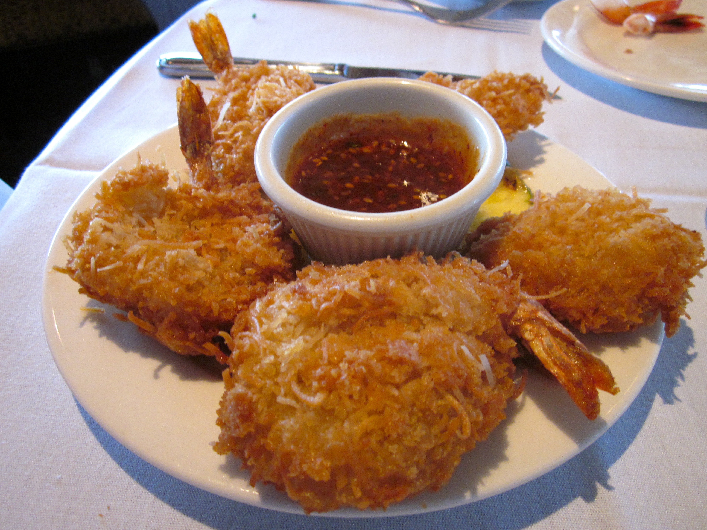

Home
Coconut Shrimp

Description
Coconut shrimp is a dish where shrimp are coated in a mixture of shredded coconut and breadcrumbs (often Panko) and then fried, often served with a dipping sauce.
It is a popular appetizer or snack, known for its crispy, slightly sweet, and tropical flavor.
Ingredients
- You'll need all-purpose flour, an egg, beer, and baking powder for the beer batter.
- If your shrimp isn't already peeled and deveined, you can do it yourself with our handy guide.
- Make sure to use unsweetened coconut flakes
- Use a cooking oil with a high smoke point, such as peanut oil or vegetable oil.
Steps
- Whisk some of the flour, the egg, beer, and baking powder together.
- Dredge the shrimp in flour, dip it in the beer batter, and roll in the coconut flakes.
- Refrigerate the shrimp for half an hour, then fry the shrimp in hot oil until golden brown.